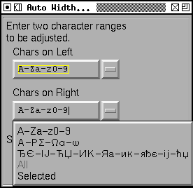
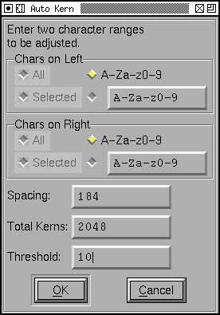

Auto
Width
The Auto Width command will attempt to guess reasonable widths (more accurately reasonable left and right side bearings) for your font. The command looks at all possible combinations of indicated glyphs (if you request more than 300 glyphs it will only look at the first 300 to avoid running out of memory (300*300 takes up a fair amount of room).
Do NOT attempt to mix scripts that are not artistically similar. FontForge will be very confused if you try to run autowidth on a Latin "I" and a Hebrew "Alef". Latin, Greek and Cyrillic can usually be intermixed since they evolved together and the letterforms are similar.
You must specify two different sets, one for the glyph on the left (which will have its right side bearing adjusted) and one for the glyph on the right (which will have its left side bearing adjusted. I know that sounds backwards but think about it a little), of course these two sets may be the same. You may apply the command to all glyphs in the font (if there are few than 300 of course), to all the selected glyphs, the the glyphs A-Z, a-z and 0-9, to similar combinations for greek and cyrillic, or to a list of glyphs you specify yourself (glyphs may be specified either by themselves or by a range, so "ace-g" means the glyphs a, c, e, f and g (if you put commas and spaces in the list they will be treated as glyphs. If you want to specify a hyphen, put it first or last, so "-a-z" means hyphen and all letters a-z)). For information on entering non-ASCII characters see that section in the metrics view, ranges are based on Unicode code points.
Last of all the Spacing text box allows you to say how close you want the glyphs to be. If you look at a sanserif capital I, and you autowidth it with itself (and nothing else) the sum of the left and right side bearings should be equal to the spacing. By default the spacing will be set to the size of the lower case n. If you have serifs and curved letters things are more complex, but that is roughly what's going on. You may need to adjust it to suit your own preferences.
Adjusting the left and right bearings of a letter will also adjust the left
and right bearings of all accented letters based (by reference) on it. You
should not try to use AutoWidth on accented letters directly (unless those
glyphs do not use references).
Auto Kern
The Auto Kern dialog looks similar to the Auto Width dialog above.
The Spacing entry defaults slightly differently, it will be the sum of the left and right bearings for the capital I (it is assumed that the font has already been spaced, so this will give a more accurate value than using the size of an "n").
The threshold says that any kern pair whose absolute value is less than the threshold value will be ignored. Set this to 0 if you want all kerns.
Some systems have a maximum number of kerning pairs that they can deal with. If this is true for you then set "Total Kerns" to this value.
The glyphs are specified as they are for AutoWidth above, except that here it is also possible to load a set of kerning pairs out of a file. For instance in the dlg at right many unnecessary letter combinations will be checked, and kerning information generated for them, (the combination "xq" might well generate a kern, that letter pair will almost never occur in written English (or any other language)). Instead you can specify (with the [Browse...] button) that a file should be read, and only those pairs found in the file used.
I have provided a sample file containing some kerning pairs common in English (it is actually copied from Adobe Technical Note 5091). The format of this file is just a set of lines containing two glyphs per line. A kerning pair will be checked for each pair of glyphs (any lines with more or fewer glyphs than 2 will be treated as comment lines and ignored). The file may be either in latin1 encoding or in UCS2 (if in UCS2 it should begin with the byte order marker U+FEFF). You may also specify a glyph by writing out U+xxxx where xxxx gives the unicode encoding. So "Av" could be represented as "U+0041v".
Finally you must specify the lookup subtable which will own the kerning pairs.
For each glyph pair, it will set the sum of
<right bearing of
left glyph> + <left bearing of right glyph> + <kern> =
<spacing> + <glyph shape fudge factor>.
The "fudge factor" is determined by looking at the shape of the left and right edges of the glyphs (ignoring the areas that are in serifs). It looks for the closest approach of the two glyphs and performs a complicated average to figure out the fudge. If that fudge would lead to a <kern> which causes any glyphs to be too close together then it is adjusted up. The exact method is subject to change as bugs are found.
If the absolute value of a <kern> is less than the threshold then no kerning information will be produced for that pair of glyphs. If the algorithm (and any previously existing kern pairs) lead to more pairs than specified by "Total Kerns" then a new threshold value will be determined and any pairs whose <kern> is less (in absolute value) than this new threshold will be removed.
Kerning information will not be propagated from base glyphs to accented glyphs which refer to them. This is because "Ve" will probably have a rather different kerning value than "Vè". Note that this is different from the way AutoWidth behaves.
Remember kerning is not part of a PostScript® font, whatever word processor you use needs to read the kerning information from the afm file and, while kerning is part of truetype (and opentype) fonts, the Windows does not support kerning either.